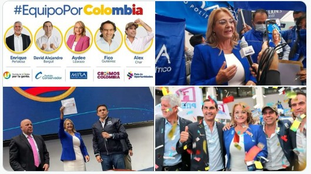

"Aquí estamos nosotros como equipo, como tenemos que hacer en Colombia. Juntos vamos a construir una manera distinta de hacer
política, con un espíritu constructivo. Y es claro que todos los problemas del país se solucionan haciendo y no hablando", dijo
el exalcalde de Bogotá, Enrique Peñalosa. Por su parte, la directora del partido de la U y exprecandidata presidencial, Dilian
Francisca Toro afirmó que en la coalición se ha hecho una alianza fuerte.
"Cada uno tiene que aportar, no hay egos ni individualismo. Existe un respeto por la libertad, la capacidad y experiencia de saber
hacer, de transformar y mejorar las condiciones de vida de nuestra gente. El próximo presidente de Colombia será de Equipo Por Colombia",
comentó la dirigente política. Cabe mencionar que Dilian aseguró el pasado 18 de enero que no hará parte de la contienda por el bienestar
de su familia.
Los precandidatos que hacen parte de la alianza son: Enrique Peñalosa (Partido de la U), Aydeé Lizarazo (Partido MIRA), David Barguil
(Partido Conservador), Alejandro Char y Federico Gutiérrez (ambos por firmas). De este modo se confirma que la coalición no contará con
el apoyo del candidato del Centro Democrático, Óscar Iván Zuluaga
